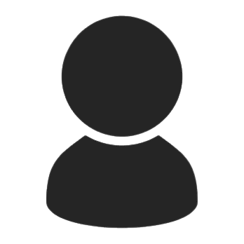
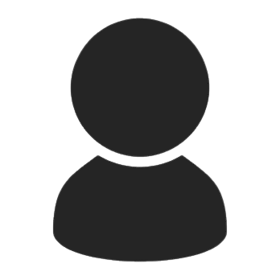

Usuário
Recursos de acessibilidade
Este site foi desenvolvido para que pessoas com deficiência visual, baixa visão, daltonismo, deficiência auditiva e mobilidade reduzida possam navegar por meio de recursos como alto contraste, aumento de fonte, teclas de atalho, tradução para a Língua Brasileira de Sinais e navegação por teclado.
Para aumentar a fonte, é só clicar no símbolo de A+ em nossa barra de acessibilidade. Caso queira voltar ao tamanho de fonte original, é só clicar em A-.
Se for necessário, você também pode usar o zoom nativo do seu navegador, pressionando as teclas “Ctrl” e “+” para aumentar todo o site e “Ctrl” e “-“ para diminuir. Para voltar ao padrão, pressione “Ctrl” e “0”.
Este site tem melhor acessibilidade quando acessado nas versões mais atualizadas do seu navegador web. Utilize sempre a versão mais recente de seu software.
Teclas de atalho por navegadores
Internet Explorer e Google Chrome:
“Alt” + “1” - ir para o conteúdo
“Alt” + “2” - ir para o menu
“Alt” + “3” - ir para o rodapé
Firefox:
“Alt” + “Shift” + “número” Safari e OmniWeb: “Ctrl” + “número”
Opera:
“Shift” + “Escape” + “número”
Safari e OmniWeb:
Navegação por tabulação
Use a tecla Tab para navegar por elementos que recebem ação do usuário no site, tais como links, botões, campos de formulário e outros na ordem em que eles são apresentados na página, e Shift + Tab para retornar. Use as setas direcionais para acessar as informações textuais.
Sugestões de programas disponíveis para pessoas com deficiência
- Nitrous Voice Flux: controla o computador por voz. Gratuito;
- NVDA: software livre para ler tela – vários idiomas (Windows);
- YeoSoft Text: leitor de tela em inglês e português;
- Jaws for Windows: leitor de tela – vários idiomas;
- Virtual Vision: leitor de telas em português do Brasil;
- DOSVOX: sistema para deficientes visuais (Windows ou Linux).
- Talckback: leitor de tela disponível em smartphones Android.
Observação: leia no manual do leitor de telas sobre a melhor forma de navegação em páginas web.
LIBRAS - Língua Brasileira de Sinais
Este site é acessível em LIBRAS através do VLibras.
-Do lado direito de cada página do site existe o ícone de um Widget informando que o site é acessível em LIBRAS.
-Para traduzir, basta clicar sobre o ícone e selecionar o texto que deseja traduzir.